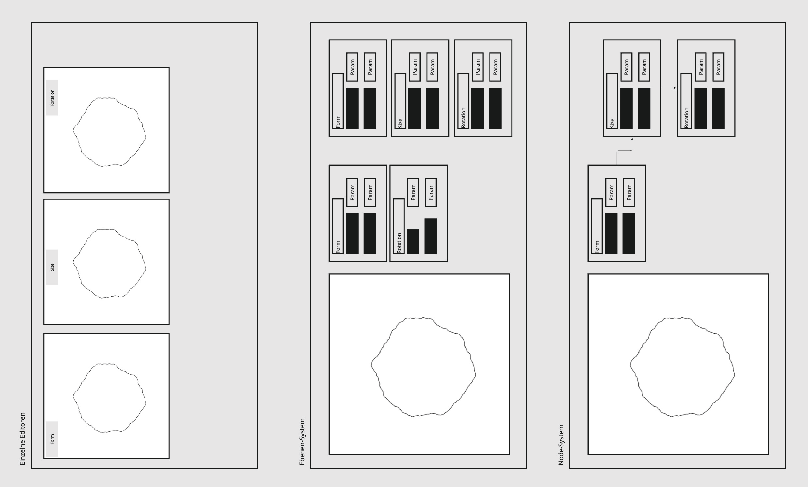
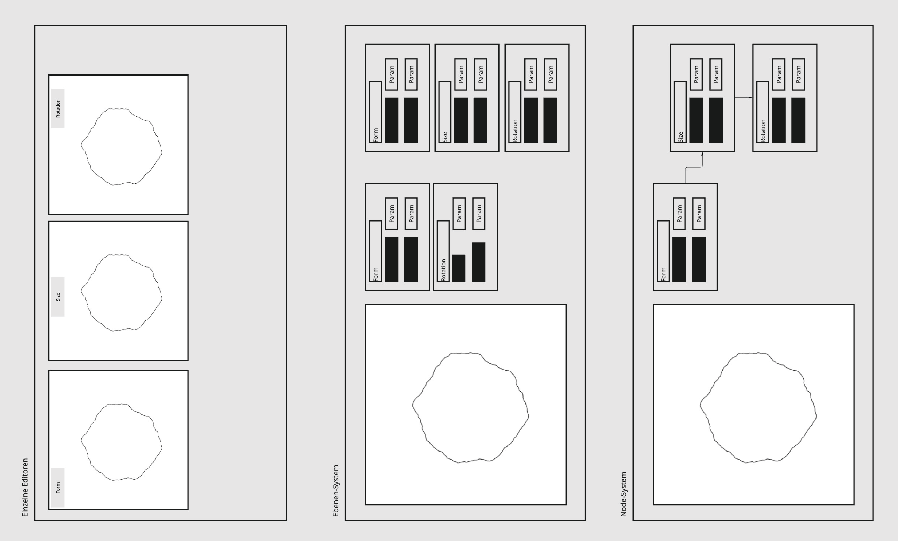

Index of Noise is an ongoing artistic research project emerging from an eponymous work by Moritz Hundbiß (Basel, Switzerland) and Robin Woern (Berlin, Germany), and Superposed Patterns by Niklas Thran (Berlin, Germany). In times of extensive retouching, merciless denoising of digital renderings and smooth-looking machine learning model-generated images, this index wants to give noise a stage to communicate and highlight its importance in the vast field of visual arts.

 
